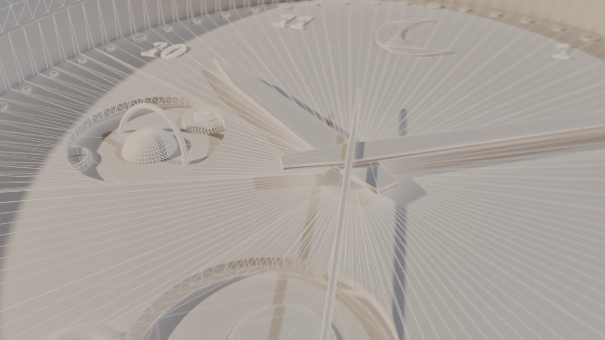
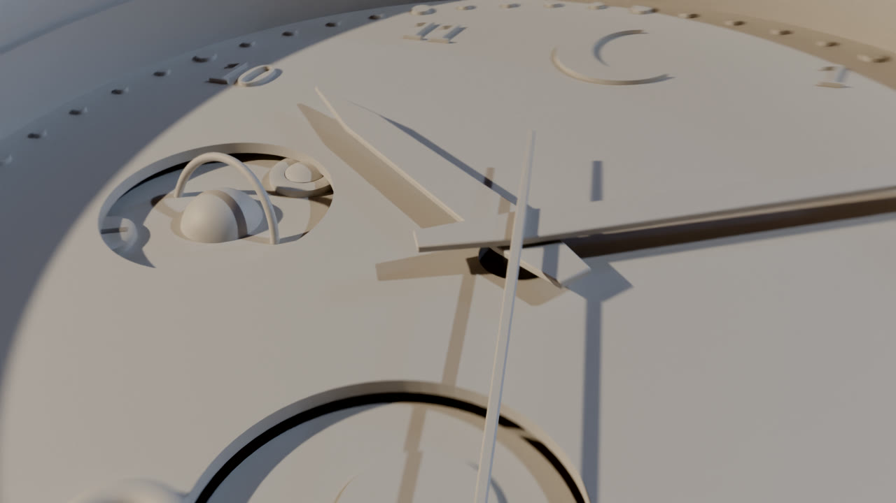
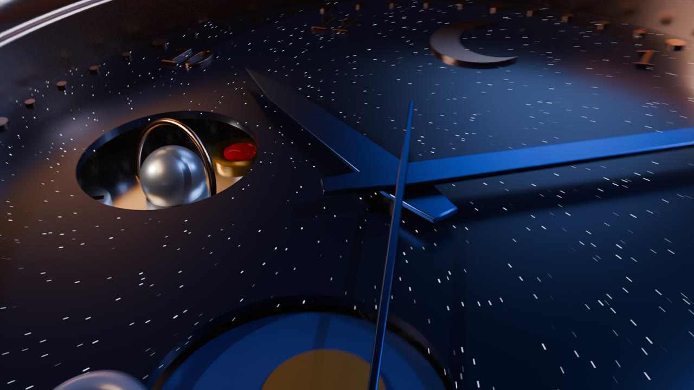
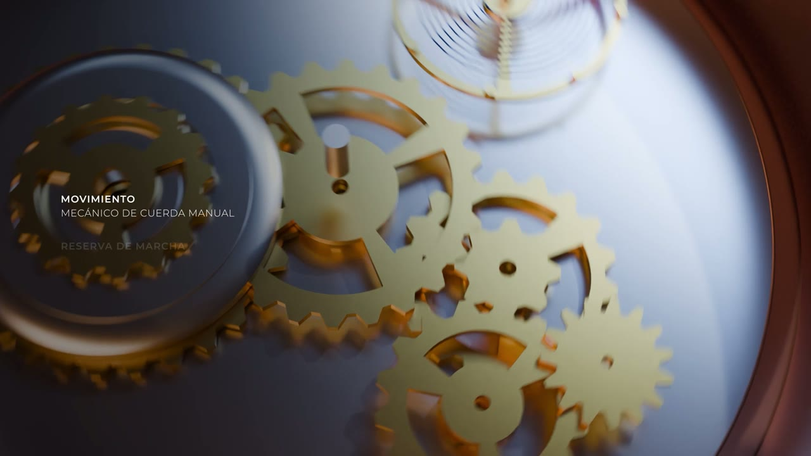
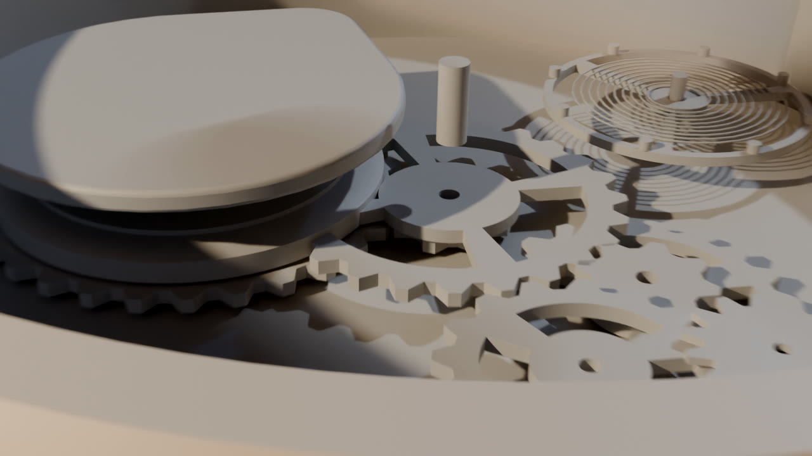
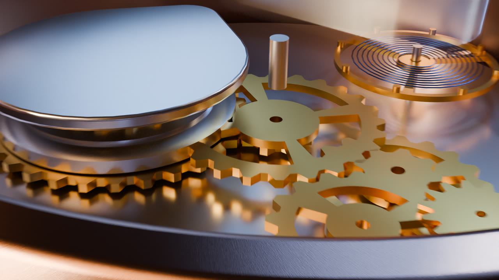

02 · 3D de producto3D product
Spot para una marca de relojes de lujo inventada: el reloj se arma pieza a pieza entre nubes mientras los rótulos presentan cada material.Spot for an invented luxury watch brand: the watch assembles piece by piece among clouds while titles present each material.
El reto: que decenas de piezas (caja, puentes, rubíes, engranajes, esfera de aventurina) se lean como un objeto de joyería real, con un ritmo ni brusco ni aburrido.The challenge: make dozens of parts (case, bridges, rubies, gears, aventurine dial) read as real jewellery, with pacing that is neither abrupt nor dull.
La solución: la base se construyó en Blender con scripts asistidos por IA y yo dirigí la pieza: acabado del modelado, materiales, luz de contorno ligada a cada cámara y animación. Los rótulos se generan con un script de After Effects.The solution: the base was built in Blender with AI-assisted scripts and I directed the piece: modelling finish, materials, rim lighting tied to each camera, and animation. Titles are generated by an After Effects script.

01
MallaMesh
Modelado con escala real en milímetros y topología limpia para los biseles.Modelled at real millimetre scale, with clean topology for the bevels.

02
Barro y luzClay and light
Composición y luz en barro antes de los materiales: luz de contorno y difusores por cámara.Composition and light in clay before materials: rim light and diffusers per camera.

03
Lookdev
Oro rosa, acero azulado, aventurina con estrellas y fase lunar.Rose gold, blued steel, starry aventurine and moon phase.

04
Rótulos y montajeTitles and edit
Rótulos generados por script en After Effects, color y carta final de marca.Script-generated titles in After Effects, colour and brand end card.


BarroClayRenderContactoContact
Disponible para proyectos freelance y puestos en remoto o en Madrid.Available for freelance projects and remote or Madrid-based roles.